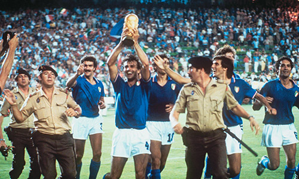

La Copa Mundial de Fútbol de 1982 fue la duodécima edición del campeonato mundial de fútbol masculino organizado por la FIFA. Se celebró en España desde el 13 de junio hasta el 11 de julio de 1982. El campeonato contó por primera vez con la participación de 24 selecciones nacionales, a través de una ampliación de los cupos continentales en la fase clasificatoria. Para darles cabida se hicieron cambios en el sistema de competición: hubo un formato con dos liguillas y fase final que solo sería utilizado en esta edición. La selección de Italia se proclamó campeona mundial por tercera vez, luego de haber derrotado en la final a Alemania Federal por 3:1. Los transalpinos no tuvieron un buen comienzo al haberse clasificado con tres empates, pero mejoraron su juego a partir de la segunda fase y se llevaron el título sin haber concedido una sola derrota. El más destacado del torneo fue Paolo Rossi, ganador de la Bota de oro al máximo goleador y del Balón de oro al mejor jugador. Por otra parte, el capitán italiano Dino Zoff se convirtió en el futbolista de mayor edad que levantaba el título de campeones, a los 40 años.
